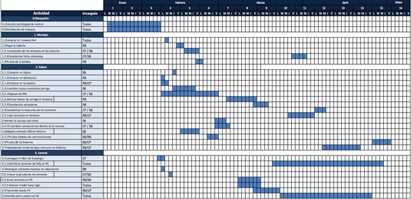
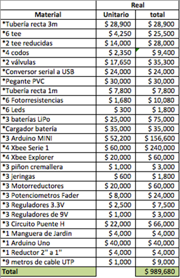

Introducción
SmartCylinder control de acueductos, es un proyecto desarrollado en el semestre 2015-1 en el curso Taller de Control de la Universidad de Los Andes. Tiene como objetivo la implementación de un prototipo a escala y de bajo costo de una planta para el tratamiento de aguas de consumo humano empleando dos técnicas de control interdependientes.
Características
La característica que se busca principalmente en el prototipo de este proyecto es que sea escalable. Es decir, que se pueda extender el uso de las estrategias de control de la forma en que se presentan aquí a la situación de un acueducto municipal real, bajo la suposición de que entonces se contaría con más y mejores recursos para sensores y actuadores.
Otra característica del prototipo es que debe ser de bajo costo. Por ello, los materiales totales requeridos para la replicación de este proyecto se encuentran por debajo de 1.5 salarios mínimos.
Por último, como se explicará en el Capítulo 4, se realizó el diseño basado en dos estrategias de control.
Cronograma
Figura 1. Cronograma
Materiales
- 3 metros de tubería recta PVC de 3”.
- 1 metro tubería recta PVC de 1”.
- 6 Tee de tubería PVC de 3”.
- 1 metro de canal plástico en U.
- 2 Tee reducida de tubería PVC de 3” a 2”.
- 4 codos de tubería PVC de 3”.
- 2 válvulas de tubería PVC de 3”.
- 1 reductor tubería PVC de 2” a 1”.
- Pegante para PVC.
- 1 rollo de cinta teflón PTFE.
- Abracaderas plásticas.
- Manguera para jardín aprox. 2m de largo.
- 6 leds de chorro.
- 6 fotorresistencias.
- 3 potenciómetros fader.
- 3 baterías de LiPo.
- 3 Arduino Mini.
- 1 conversor serial a USB.
- 4 XBee serie 1.
- 3 motor reductores DC.
- 3 piñones cremallera.
- 3 jeringas.
- 3 tornillos de 1/8’’ con sus respectivas tuercas.
- Resistencias.
- 3 reguladores 3.3V.
- 3 reguladores 9V.
- 3 condensadores 0.1µF.
- 3 condensadores 0.33µF.
- 3 condensadores 10 µF.
- 3 condensadores 22 µF.
- 3 integrados L298N.
- 12 diodos fast recovery
- 6 transistores 3904.
- 6 transistores3906.
- Borneras.
- 9 metros de cable UTP.
- Tarjeta Arduino UNO.
- Cautín.
- Estaño.
- Segueta.
- Pinzas.
Costos
Figura 2. Presupuesto
Diagrama de bloques

Figura 3. Diagrama de bloques